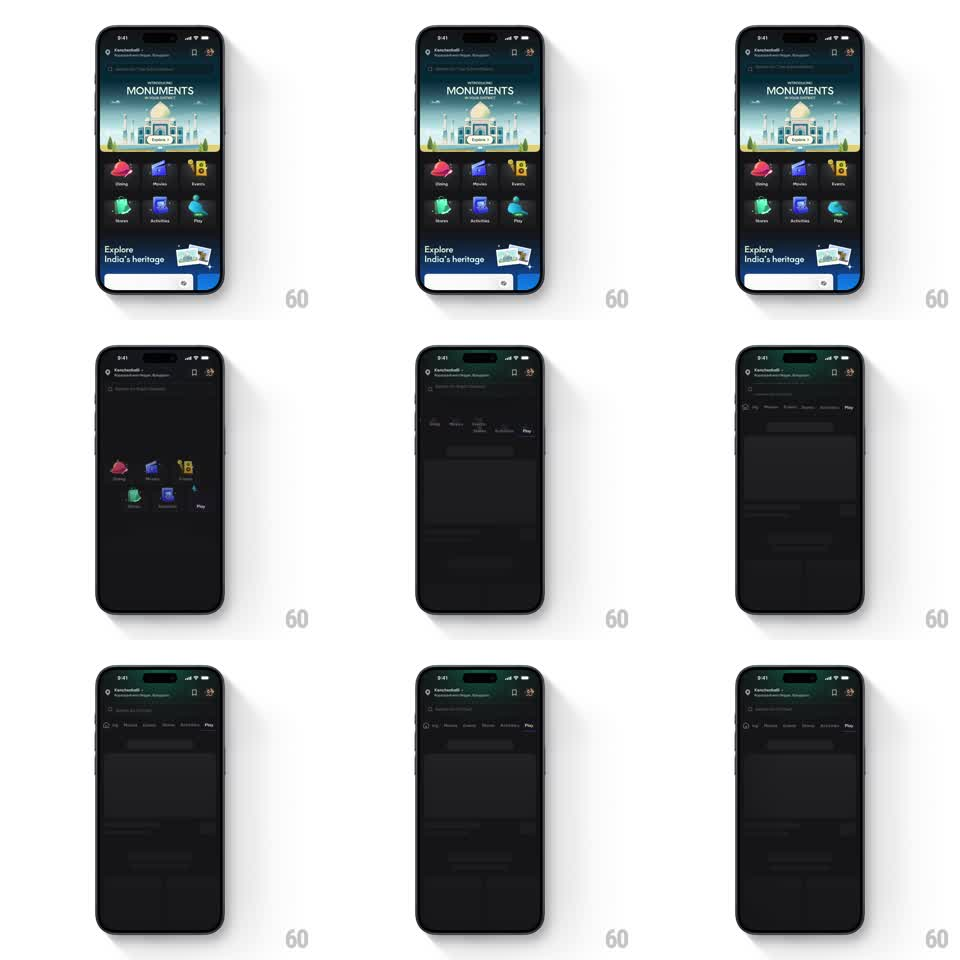

Media
Frame-by-frame

Rebuild this interaction 1:1: District's home scroll morph - the 3x2 category icon grid collapses into a sticky horizontal tab bar at the top as the content scrolls up beneath it.

Rebuild this interaction 1:1: District's home scroll morph - the 3x2 category icon grid collapses into a sticky horizontal tab bar at the top as the content scrolls up beneath it.
## Integration
Integration: stack-agnostic spec - springs given as stiffness/damping, timed motions as duration + curve; map every value to your framework and animation library of choice.
## Scene
District home, dark: hero banner ("INTRODUCING MONUMENTS", Taj Mahal illustration), a 3x2 grid of category tiles (Dining, Movies, Events, Stores, Activities, Play - each a colored icon with label), an "Explore India's heritage" card, and a search bar. Scrolled state: a sticky row of the same six categories as compact tabs under the header, with list content below.
## Motion spec
Pattern: scroll-driven grid-to-tab-bar morph.
- The morph is scrubbed by scroll: over the first ~180px of upward scroll, each grid tile translates to its tab-slot position in the top row, scaling from tile size (~64px) to tab size (~28px), its label fading out (opacity 1 -> 0 over the middle 50% of the range).
- Tiles travel on straight paths but stagger: the nearest-to-final-slot tile moves first, the farthest last - a left-to-right wave.
- The hero banner and heritage card scroll away normally underneath; the grid's container height collapses as the tiles leave, so content below slides up with it.
- At 100% the tab row locks under the header with a hairline divider fading in (150ms) and a subtle backdrop blur appearing behind the row.
- Scrolling back down reverses the entire morph with the same scrubbing - tiles grow back into the grid, labels return.
## Calibration
- Icon artwork (colors, glyphs) must be identical in both forms - same asset, scaled, not swapped.
- The morph never jumps: position and scale are pure functions of scroll offset.
## Reduced motion
Grid crossfades to the tab bar over 200ms at a scroll threshold.
## Don't miss
- The search bar stays pinned above the morphing row throughout.
- Tab order in the final row matches the grid's reading order exactly.